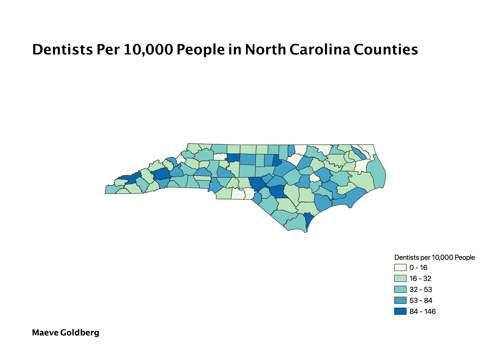

Homework 9: North Carolina Denistry Choropleth
Maeve Goldberg
This choropleth map shows the number of dentists per 10,000 in each NC county. I choose this data because I think it illustrates part of a much larger issue about rural health and access to healthcare in this state. The very low ratio of dentists in some rural counties (in some counties there is less than one dentist per 10,000 people) likely does not bode well for the dental health of rural NC communnities. While in metropolitian or suburban areas poeple might have easy accsess to dental care, and even the choice between many different care providers, rural communties may have few to no options, and may experience greater time or monetary expense to get dental care services.

Data used for this project
Data Source
Original CSV Data
Clean CSV Data
GeoJSON File